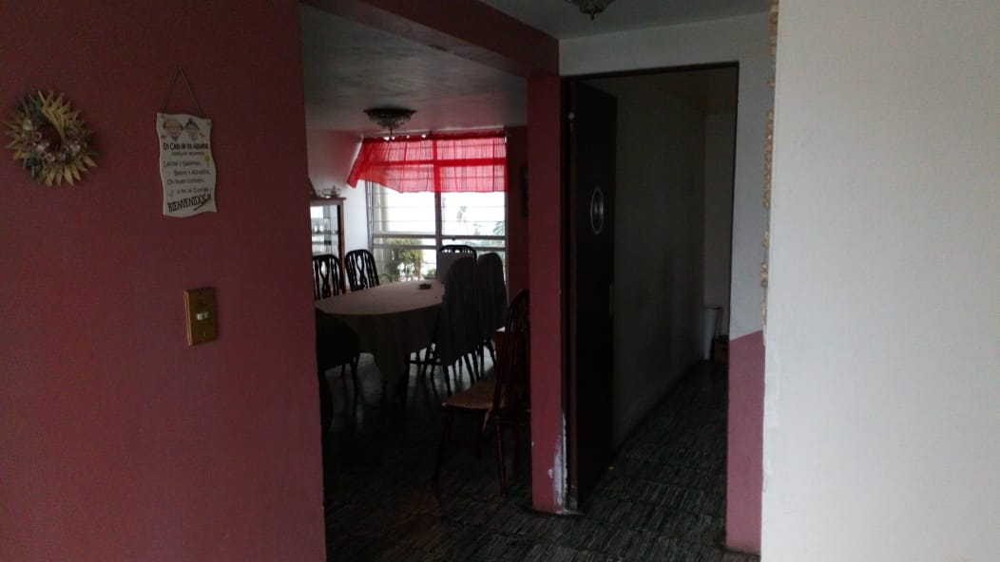
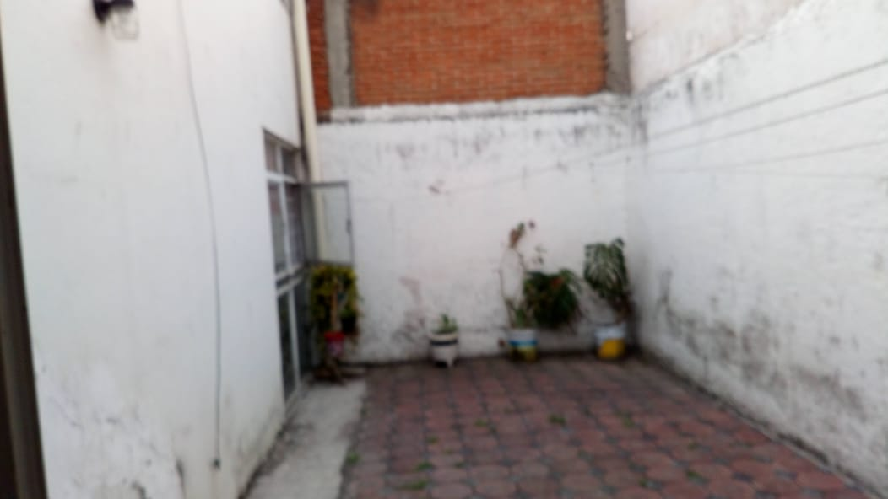
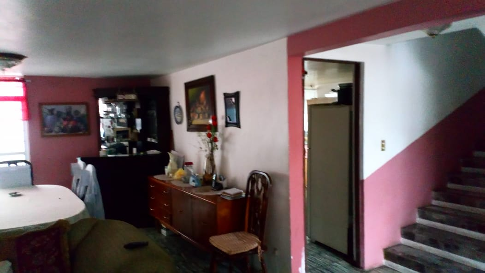

Portafolio de trabajo en campo
Obra que habla
Obra que habla
por nosotros.
Fotos reales de trabajos de Mantenimiento Gabe en Puebla y zona metropolitana.
Ejecución directa
Trabajo en sitio
Herrería y pailería
Herrería estructural
Registro visual
Trabajos realizados
Fotos reales de trabajos de Mantenimiento Gabe. Los espacios marcados están reservados para próximos trabajos — se completan con fotos reales del negocio.



Módulo interactivo // Comparación de intervención
Así se ve una renovación — desliza para comparar
 Antes
Después
Antes
Después
Nota transparente: este visor interactivo ilustra el alcance de una renovación típica y muestra cómo se presentarán los proyectos de Mantenimiento Gabe. Las fotos son ilustrativas y no corresponden a un mismo proyecto. Arrastra a izquierda o derecha para comparar.
Evaluación sin costo ni compromiso en Puebla
¿Quieres que tu proyecto se vea así?
Escríbenos y agendamos tu visita.